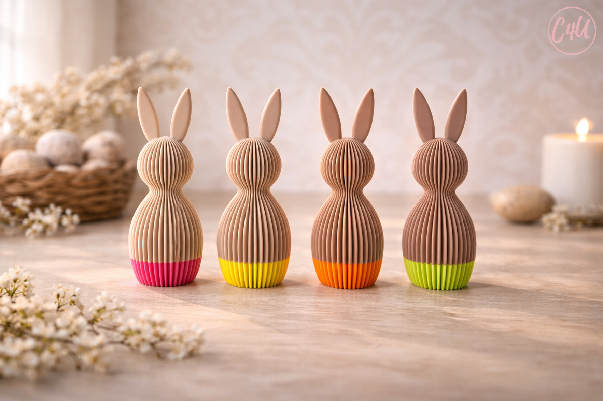
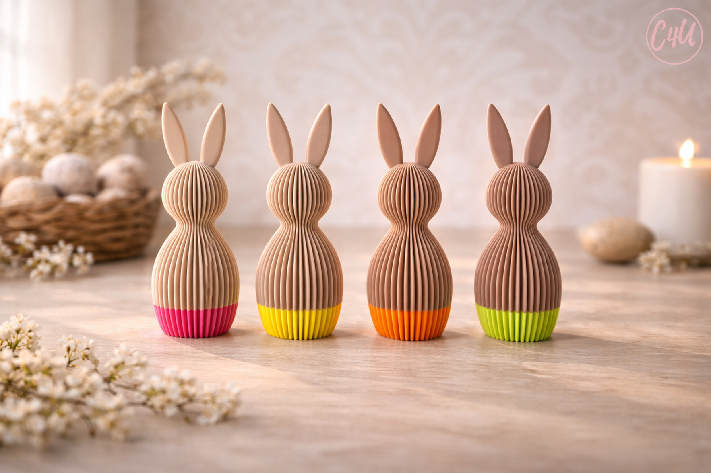
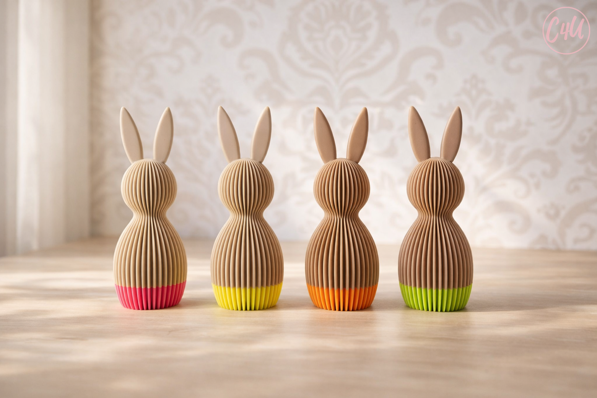
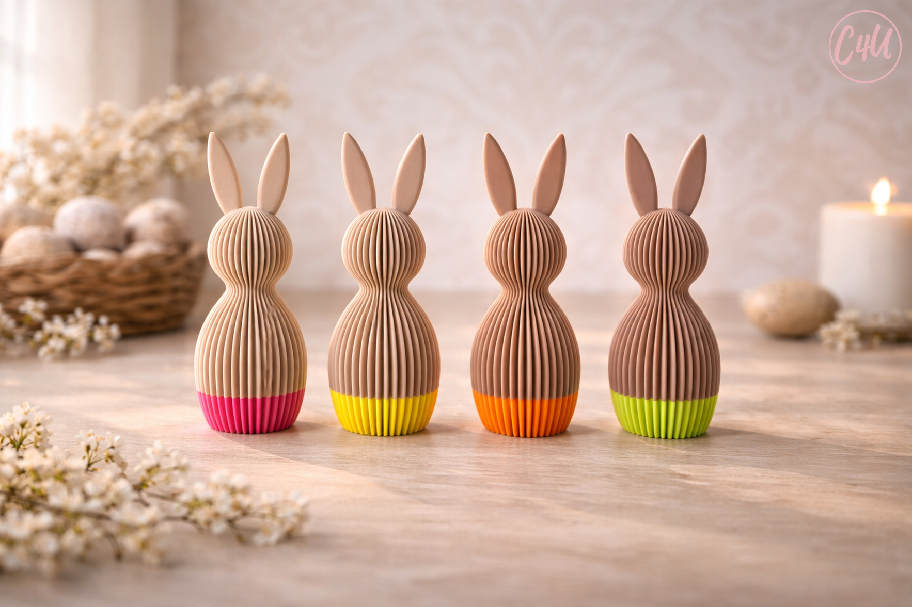
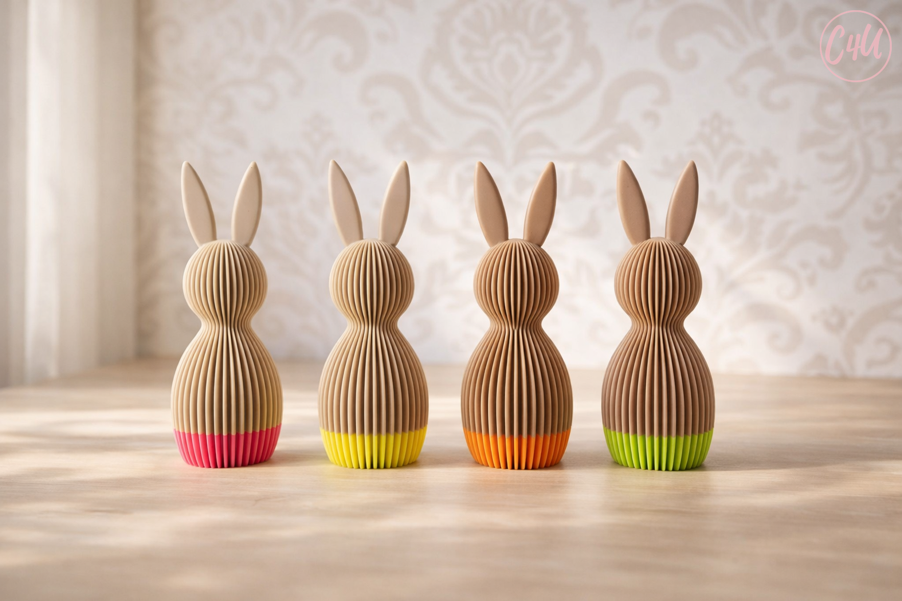
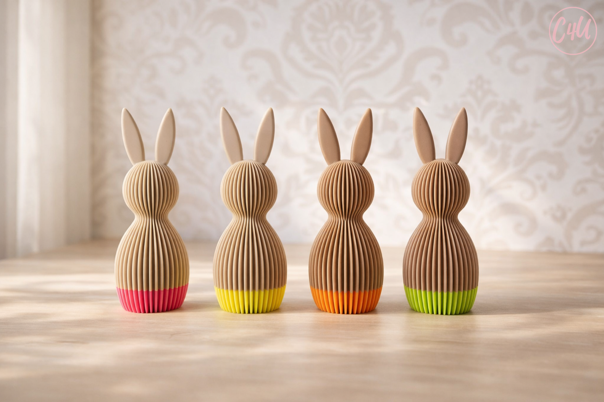
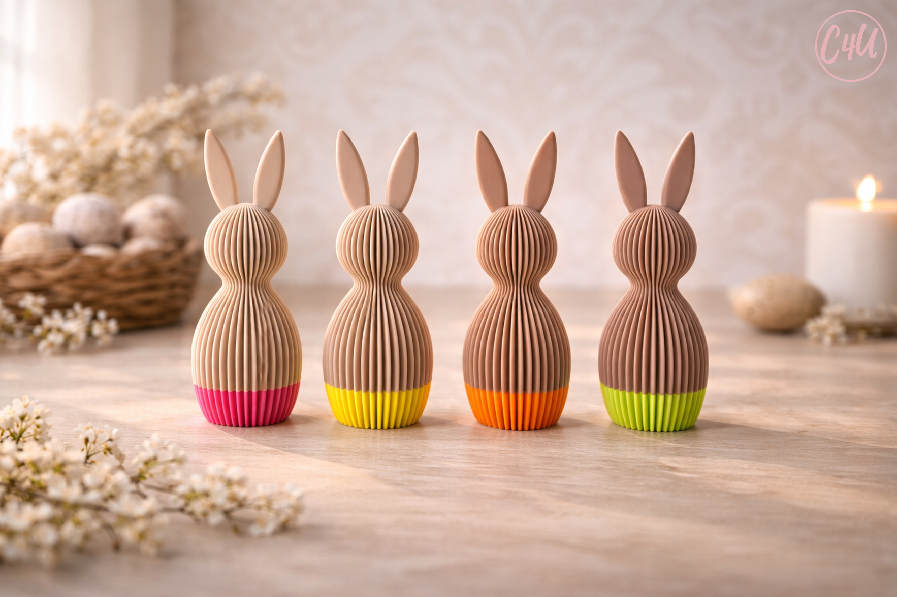
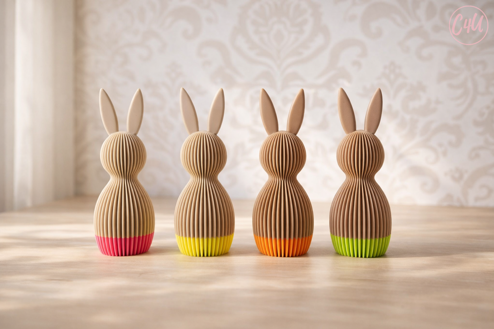

 





The C4U Studio 3D Printed Bunny is a minimal sculptural decor object designed using modern digital fabrication techniques. Combining traditional craft inspiration with contemporary architectural form, this piece represents the core identity of C4U Studio.
Crafted in PLA with a distinctive vertical fluted geometry, this modern Easter decor piece is part of the official C4U Studio products collection.